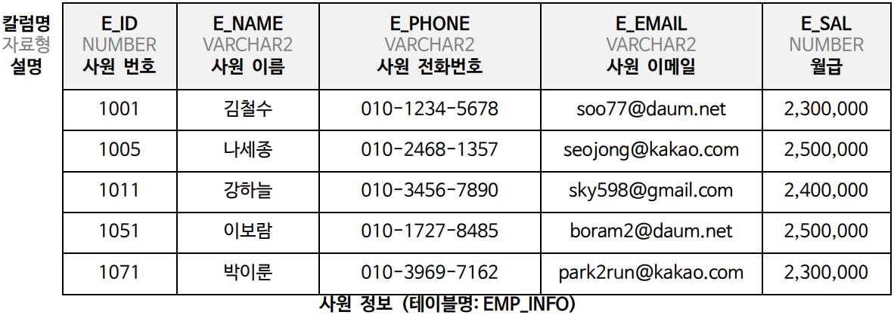
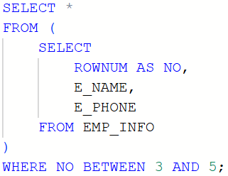
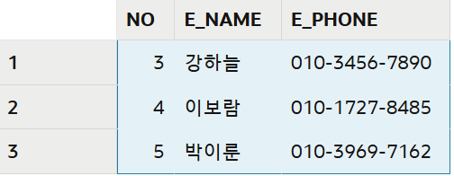
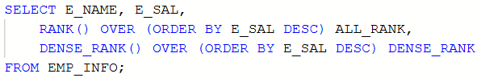
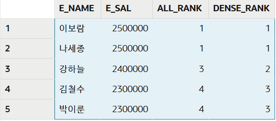
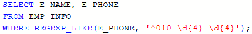
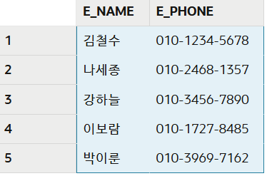

아래와 같이 사원 정보를 저장하는 테이블이 있을 때,
예상 문제 1 ~ 4 의 작업을 수행하는 SQL문을 작성하시오.
SQL 실습하기

예상문제 1
윈도우 함수
사원 정보 테이블에서 NO 라는 이름으로 순번을 붙이고, 순번이 3부터 5까지의 자료를 조회하시오.
출력 항목(영문 칼럼명 사용): 순번(NO), 사원 이름, 사원 전화번호
SQL문

실행결과

예상문제 2
RANK
사원 정보 테이블에서 다음 조건에 맞게 월급이 많은 순으로 순위를 정하시오.
- ALL_RANK 칼럼: 동일한 순위는 동일한 값이 부여된다.
- DENSE_RANK 칼럼: 동일한 순위를 하나의 건수로 계산한다.
출력 항목(영문 칼럼명 사용): 사원 이름, 월급, ALL_RANK 칼럼, DENSE_RANK 칼럼
SQL문

실행결과

예상문제 3
정규표현식 ①
사원 정보 테이블의 사원 전화번호 칼럼에서 정규 표현식을 사용하여 다음과 같은 형식의 전화번호를 조회하시오.
- 010 으로 시작한다.
- 010 뒤에 하이픈(-)이 붙는다.
- 하이픈(-) 뒤에 4자리 숫자가 붙는다.
- 숫자 뒤에 하이픈(-)이 붙는다.
- 하이픈(-) 뒤에 4자리 숫자가 붙는다.
출력 항목(영문 칼럼명 사용): 사원 이름, 사원 전화번호
SQL문

실행결과

예상문제 4
정규표현식 ②
사원 정보 테이블의 사원 이메일 칼럼에서 정규 표현식을 사용하여 다음과 같은 형식의 이메일을 조회하시오.
- a부터 z까지 알파벳 또는 A부터 Z까지 알파벳 또는 0부터 9까지 숫자로 시작한다.
- 그 다음 이어서 @ 문자가 나온다.
- @ 문자 다음에 a부터 z까지 알파벳 또는 A부터 Z까지 알파벳 또는 0부터 9까지 숫자가 나온다.
- 그 다음에 이어서 마침표(.)가 나온다.
- 마침표(.) 다음에 a부터 z까지 알파벳 또는 A부터 Z까지 알파벳 또는 0부터 9까지 숫자가 나오며 끝난다.